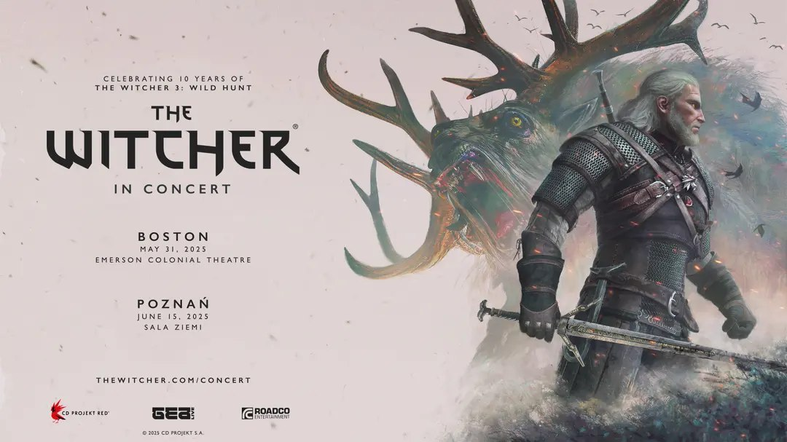

The Witcher in Concert - Anniversary Concerts
This May marks the 10th anniversary of The Witcher 3: Wild Hunt, and we're thrilled to announce special concerts celebrating it in Poland and the United States!
Concert Details
In just a couple of days, on / , you will be able to purchase tickets for two new anniversary concerts:
- Boston, Massachusetts on at Emerson Colonial Theatre
- Poznań, Poland on during Pyrkon, a Polish Fan Convention who teamed up with us for this celebration
Exclusive Pre-sale
For those of you who signed up for our newsletter at https://thewitcher.com/concert , we've also prepared an exclusive pre-sale, just like last time!
It will start on / . Make sure to check your inbox—you'll find the pre-sale code there!